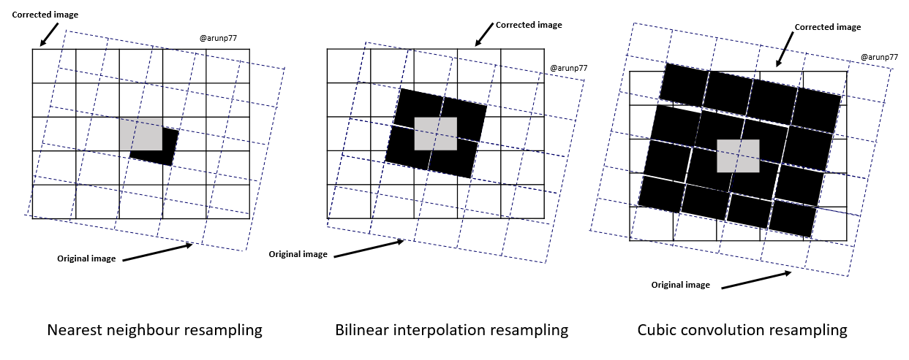
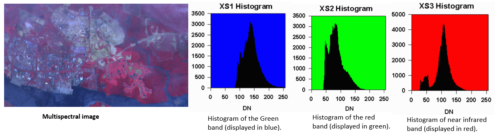
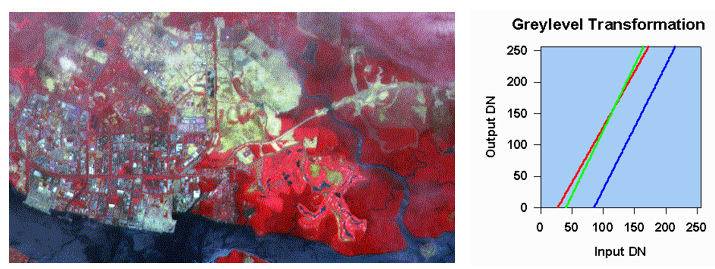

Image processing plays a crucial role in remote sensing, enabling the transformation of raw satellite or airborne imagery into meaningful information about the
Earth's surface.
Remote sensing image processing involves analyzing and enhancing images acquired from distant sources, such as satellites or aerial platforms.
This includes tasks like correcting distortions, improving resolution, and extracting meaningful information from the imagery. Techniques like
radiometric and geometric corrections, image classification, and feature extraction are commonly employed to derive valuable insights from remote
sensing data. Advanced methods may also involve machine learning algorithms for automated analysis and interpretation of the images.
Key steps envolved in image processing:
The process of image processing in remote sensing involves several key steps:
Preprocessing:
This is the initial stage in remote sensing image analysis, as it prepares the raw imagery for subsequent processing and analysis.
Pre-processing tasks, also known as image restoration and rectification, aim to address radiometric and geometric distortions specific
to sensors and platforms. Radiometric corrections become essential to account for changes in scene illumination, viewing angles, atmospheric
conditions, and sensor characteristics like noise and response. These corrections vary based on the particular sensor, platform, and conditions
during data acquisition. Additionally, converting or calibrating the data to absolute radiation or reflectance units is often desirable for
facilitating data comparison.
How do we know the incoming signal to sensors are scattered or not?
Radiation undergoes scattering as it traverses and engages with the atmosphere. This scattering has the effect of reduce or attenuate
a portion of the energy that reaches the surface. Moreover, the atmosphere contributes to further attenuation of the signal traveling from the
target to the sensor. Atmospheric correction can be approached through diverse methods, spanning from intricate modeling of atmospheric conditions
during data acquisition to straightforward calculations based solely on the image data. This is achieved by applying mathematical models
and resampling techniques to align the image with a reference map or coordinate system. In remote sensing, distinguishing between
scattered and non-scattered signals, as well as assessing the impact of atmospheric conditions on signal attenuation, involves various techniques:
Radiative Transfer Models: Mathematical models, such as radiative transfer models, simulate the interaction of electromagnetic radiation with the atmosphere. By comparing observed and modeled data, researchers can infer the atmospheric effects and assess whether the signal has undergone scattering or attenuation.
Spectral Analysis: Analyzing the spectral characteristics of the acquired data can provide insights into atmospheric conditions. Certain wavelengths are more susceptible to scattering, and the analysis of spectral signatures can help identify whether the signal has been scattered.
Calibration Targets: Placing calibrated targets in the scene or using natural features with known reflectance properties can serve as reference points. By comparing the expected and observed signal values, researchers can infer the impact of atmospheric conditions on signal attenuation.
Ancillary Data: Utilizing ancillary data, such as meteorological information, can aid in understanding and modeling atmospheric conditions during data acquisition. This information helps in correcting or adjusting the observed signal for atmospheric effects.
Historical Data and Trends: Examining historical data and observing trends in signal behavior over time can provide valuable insights. Changes in signal characteristics that correlate with specific atmospheric conditions may indicate scattering or attenuation effects.
Ground-Based Measurements: Conducting ground-based measurements, such as using instruments to directly measure atmospheric parameters, helps validate and improve atmospheric correction models.
Here's a breakdown of the key steps involved in image preprocessing for remote sensing:
Geometric Correction:
Geometric corrections address distortions caused by the Earth's curvature, satellite orbit, and sensor tilt, ensuring that the
image accurately represents the true geometry of the Earth's surface. This correction becomes necessary
to facilitate comparisons between images captured by various sensors on different dates or times. It also proves useful when mosaicking
multiple images from a single sensor while ensuring consistent illumination conditions across scenes.
Here's an overview of how geometric correction is typically done:
Ground Control Points (GCPs) Collection:
Identify distinct and easily identifiable features in the image and corresponding locations on the Earth's surface.
These features, known as Ground Control Points (GCPs), serve as reference points for the correction process.
The geometric registration process involves identifying the image coordinates (i.e. row, column) of several clearly discernible points,
called GCPs, in the distorted image, and matching them to their true positions in ground coordinates (e.g. latitude, longitude).
Coordinate Transformation:
Use the GCPs to perform a coordinate transformation that relates pixel coordinates in the image to geographic coordinates on the Earth's surface.
Common transformations include polynomial transformations (e.g., polynomial of the first or second order) or affine transformations.
Mathematical Models:
Polynomial Correction: This method utilizes polynomial equations of various degrees to model the distortions in the image.
The coefficients of the polynomial are determined by fitting the model to ground control points (GCPs) or reference imagery. Polynomial
correction is a versatile approach that can handle a wide range of distortions, including geometric shifts, scale variations, and skew.
Rational Function Model (RFM): The RFM is a more sophisticated mathematical model that represents the image coordinates as
a rational function of the ground coordinates. This model is particularly useful for correcting distortions caused by satellite orbit, sensor
orientation, and elevation.
Triangulation-Based Correction: This method divides the image into triangles and applies transformations to each triangle to
align it with a reference frame. The transformations are determined using GCPs or other reference data. This approach is particularly well-suited
for images with significant local distortions.
Resampling:
In georeferencing or geocorrection processes in remote sensing, resampling is a key step to correct distorted images. The purpose of resampling is to transform the pixel values from the original image to a new set of coordinates, aligning them with a specified map projection or coordinate system.

Mathematical models:
Nearest Neighbor Resampling: In Nearest Neighbor Resampling, for each pixel in the corrected image, the digital value is directly taken from the pixel in the original image that is closest to its new location.
It is a computationally efficient method but can result in jagged edges and loss of detail.
Bilinear Interpolation: In Bilinear Interpolation Resampling, for each new pixel in the corrected image, a weighted average is calculated
based on the values of four pixels in the original image that are nearest to the new pixel's location.
These four nearest pixels form a square or rectangle around the new pixel, and their values contribute to the calculation of the new pixel's value.
The averaging process alters the original pixel values and creates entirely new digital values in the output image. This may be undesirable if further
processing and analysis, such as classification based on spectral response, is to be done. If this is the case, resampling may best be done after
the classification process.
Cubic Convolution Resampling: This technique utilizes a cubic polynomial to interpolate the value of each pixel in the rectified image.
It produces the smoothest results but is computationally more demanding.
Lanczos Resampling: This technique applies a Lanczos filter to the original image before resampling, which reduces aliasing artifacts
and produces sharp, high-quality results. It is particularly well-suited for high-resolution imagery.
Orthorectification:
In addition to geometric correction, orthorectification involves correcting for relief displacement caused by variations in terrain.
Digital Elevation Models (DEMs) are often used to account for the topographic variations, ensuring that objects on the Earth's surface are accurately represented in the image.
Verification and Validation:
Assess the accuracy of the geometric correction by comparing the corrected image against known ground features.
This step may involve statistical measures to evaluate the alignment between the image and the reference data.
Reprojection: Reproject the image to a specific map projection or coordinate system, ensuring consistency with other geospatial datasets.
Radiometric Correction:
Radiometric corrections address variations in sensor sensitivity and illumination conditions, ensuring that the image's pixel values accurately
reflect the actual reflectance or radiance of the Earth's surface. This involves calibrating the sensor response, adjusting for atmospheric effects like scattering and absorption,
and normalizing the image to a standard reference. Here are common methods used for radiometric correction:
Relative Radiometric Normalization:
Compares the pixel values of an image with those of a reference image acquired under similar conditions.
Adjusts the pixel values proportionally to make them more comparable.
Flat-Field Correction:
Addresses variations in sensor sensitivity across the image.
Uses a flat-field image, typically acquired by imaging a uniform surface, to correct for uneven sensor response.
Gain and Offset Adjustment:
Applies correction factors to account for sensor gain and offset variations.
The correction is usually based on calibration data provided by the sensor manufacturer.
Sun Angle Correction:
Adjusts pixel values based on the sun's angle during image acquisition.
Corrects for variations in illumination due to changing solar angles.
Top of Atmosphere (TOA) Reflectance Conversion:
Converts pixel values to reflectance values at the top of the Earth's atmosphere.
Involves dividing the radiance values by the cosine of the solar zenith angle.
Dark Object Subtraction (DOS):
Assumes that some pixels in an image should have zero reflectance, such as dark objects like water bodies or shadows
Subtracts the minimum pixel value in the image from all pixel values to correct for sensor offset.
Radiometric Calibration Using Calibration Targets:
Some satellites use calibration targets on board to perform in-flight radiometric calibration.
These targets have known reflectance values, allowing for direct calibration of the sensor.
These methods can be implemented using software tools or programming languages like Python. Python libraries such as NumPy, scikit-image,
and rasterio, along with dedicated remote sensing libraries, are often employed for radiometric correction in a data processing pipeline.
The specific method chosen depends on the characteristics of the sensor, the type of imagery, and the desired level of accuracy in the
radiometric correction.
Radiometric calibration:
Radiometric correction is a crucial step in remote sensing image processing, as it transforms raw digital numbers (DNs) recorded by a satellite
sensor into calibrated radiance or reflectance values that accurately represent the physical properties of the Earth's surface.
The process involves applying mathematical equations to compensate for various factors that affect the sensor's recorded signal.
Radiometric calibration aims to convert DNs into radiance values by accounting for the sensor's gain (sensitivity) and offset (bias).
This process can be represented mathematically as:
$$\text{Radiance} = (\text{DN} - \text{Offset}) \times \text{Gain}. $$
where,
- Radiance is the measured electromagnetic radiation in units of watts per meter squared per steradian per micrometer (W/m2/sr/µm).
- DN is the digital number recorded by the sensor
- Offset is the sensor's dark signal, representing the signal recorded when no radiation is present
- Gain is the sensor's sensitivity, representing the proportionality between the incident radiation and the recorded DN.
Solar Irradiance calibration:
Solar irradiance correction normalizes radiance values by dividing them by the solar irradiance at the time of image acquisition. This accounts for
variations in solar energy reaching the Earth's surface due to changes in solar-Earth distance and atmospheric effects. The solar irradiance correction
equation can be expressed as:
$$\text{Normalized Radiance} = \frac{\text{Radiance}}{\text{Solar Irradiance}}.$$
where,
- Solar Irradiance is the solar energy incident on the Earth's surface in units of W/m2/µm
Path Radiance Correction:
Path radiance refers to the amount of radiation scattered by the atmosphere between the Earth's surface and the satellite sensor. It is subtracted from the
normalized radiance values to isolate the reflected radiation from the Earth's surface. The path radiance correction equation is:
$$\text{Corrected Radiance} = \text{Normalized Radiance} - \text{Path Radiance}.$$
where,
- Path Radiance is the atmospheric scattering contribution to the measured radiance
Conversion to TOA Reflectance:
The final step in radiometric correction is to convert the corrected radiance values to TOA reflectance. TOA reflectance represents the proportion of solar irradiance reflected by the Earth's surface and
scattered by the atmosphere to the satellite sensor. The conversion equation is:
$$\text{TOA Reflectance} = \frac{\text{Corrected Radiance}}{\text{Solar Irradiance} \times \text{Cos}(\text{Solar Zenith Angle})}$$
where,
- Solar Zenith Angle is the angle between the incoming solar radiation
and the vertical direction at the surface.
Noise Reduction:
Noise reduction techniques are employed to remove unwanted artifacts and imperfections introduced during image acquisition, sensor operation,
or data transmission. This involves applying filtering algorithms to smooth out noise while preserving the underlying image features.
Here are some common noise reduction techniques used in remote sensing:
Spatial Filtering: Spatial filtering involves applying mathematical operations to neighboring pixels in an image to smooth out noise while preserving
the underlying image features. Common spatial filtering techniques include averaging filters, median filters, and Gaussian filters [1, 2, 3, 4, 5, 6].
Frequency Filtering: Frequency filtering involves transforming the image from the spatial domain to the frequency domain using techniques like Fourier transform or wavelet
transform. Noise is often concentrated in specific frequency ranges, allowing for its removal by applying filter masks or thresholding techniques in the frequency domain [].
Temporal Filtering: Temporal filtering utilizes multiple images acquired at different times to reduce noise. By averaging or differencing images acquired over time,
random noise can be reduced while preserving persistent features [7, 8].
Adaptive Filters: Adaptive filters adjust their filtering parameters based on local image characteristics, allowing them to effectively reduce noise while preserving
edges and fine details. Common adaptive filters include the Frost filter and the Lee filter [9, 10].
Wavelet-Based Filters: Wavelet-based filtering utilizes wavelets, which are mathematical functions that decompose an image into different frequency scales. Noise can
be selectively removed from different wavelet levels, preserving the desired information content [11,12].
Machine Learning-Based Noise Reduction: Machine learning algorithms, such as convolutional neural networks (CNNs), can be trained to identify and remove noise patterns
in images. These algorithms can learn from large datasets of noisy and noise-free images, making them effective for various noise types [13, 14].
The choice of filtering algorithm depends on the type of noise, the characteristics of the image, and the specific application. In general, a combination of different techniques may be used to achieve
optimal noise reduction while preserving image quality and information content.
Atmospheric Correction:
Atmospheric correction aims to remove the effects of the atmosphere on the image, as atmospheric scattering and absorption can alter
the spectral characteristics of the Earth's surface. This involves modeling atmospheric processes and estimating the atmospheric contribution to the image's pixel values,
allowing for more accurate interpretation of surface reflectance. Methods include the Dark Object Subtraction (DOS) or applying atmospheric correction models like FLAASH or MODTRAN.
Atmospheric Scattering Correction:
Atmospheric scattering models, such as the Rayleigh scattering model and the aerosol model, are used to estimate and correct for the distortions caused by
atmospheric scattering. These models account for the wavelength-dependent scattering behavior of the atmosphere and provide an estimate of the path radiance.
Image Registration:
Image registration aligns multiple images acquired from different sensors, platforms, or time periods to a common reference frame.
This is achieved by identifying corresponding points or features in the images and applying mathematical models to transform one image to the reference frame of the other.
Image Mosaicking:
Image mosaicking combines multiple overlapping images into a seamless, larger image that represents a broader area of the Earth's surface.
This involves stitching the images together while ensuring that the transitions between individual images are smooth and visually consistent.
Image preprocessing plays a fundamental role in remote sensing image analysis, ensuring that the processed imagery accurately represents the Earth's surface
and provides reliable information for further analysis and interpretation. The specific preprocessing steps employed depend on the characteristics of the
imagery, the sensor used, and the specific application.
Image Enhancement:
Image enhancement techniques are used to improve the visual quality of the image, making it easier to interpret and analyze. This may involve
techniques such as contrast stretching, histogram equalization, and edge detection, which can enhance the visibility of features and make subtle variations more apparent.
Example: This example is taken from Image Processing and Analysis .

In the above unenhanced image (first panel), a bluish tint can be seen all-over the image, producing a hazy apapearance. This hazy appearance is due to
scattering of sunlight by atmosphere into the field of view of the sensor. This effect also degrades the contrast between different landcovers.
It is useful to examine the image Histograms before performing any image enhancement. The x-axis of the histogram is the range of the available digital numbers, i.e. 0 to 255.
The y-axis is the number of pixels in the image having a given digital number. The histograms of the three bands of this image is shown in the following figures.
Note that the minimum digital number for each band is not zero. Each histogram is shifted to the right by a certain amount. This shift is due to the atmospheric scattering
component adding to the actual radiation reflected from the ground. The shift is particular large for the histogram of the green band, compared to the other two bands due to the higher
contribution from Rayleigh scattering for the shorter wavelength. The maximum digital number of each band is also not 255. The sensor's gain factor has been adjusted to anticipate any
possibility of encountering a very bright object. Hence, most of the pixels in the image have digital numbers well below the maximum value of 255.
(for more details check: crisp.nus)

The image can be enhanced by a simple linear grey-level stretching. In this method, a level threshold
value is chosen so that all pixel values below this threshold are mapped to zero. An upper threshold value is also chosen so that
all pixel values above this threshold are mapped to 255. All other pixel values are linearly interpolated to lie between 0 and 255.
The lower and upper thresholds are usually chosen to be values close to the minimum and maximum pixel values of the image.
Grey-Level Transformation Table for performing linear grey level stretching of the three bands of the image. Red line:
XS3 band; Green line: XS2 band; Blue line: XS1 band is shown in the side image.
The result of applying the linear stretch is shown in above image. Note that the hazy appearance has generally been removed,
except for some parts near to the top of the image. The contrast between different features has been improved.
Image Classification: Image classification involves assigning each pixel or segment of the image to a specific class or category, such as
land cover type, vegetation health, or soil moisture. This process relies on the features extracted in the previous stage and may employ
various classification algorithms, such as statistical methods, machine learning techniques, or neural networks (You can look at following paper:
Deep learning for remote sensing image classification: A survey.)
Common Image Classification Techniques:
Supervised Classification: Supervised classification utilizes labeled training data to learn the characteristics of each class. Common supervised classifiers include maximum likelihood estimation, support vector machines, and random forests.
Unsupervised Classification: Unsupervised classification groups pixels into clusters based on their similarity without the use of labeled training data. Common unsupervised classifiers include k-means clustering and ISODATA.
Object-Based Classification: Object-based classification segments the image into meaningful objects and classifies these objects based on their spectral, spatial, and textural properties.
Applications of Image Classification in Remote Sensing:
Land Cover Mapping: Image classification is used to create detailed maps of land cover, such as forests, grasslands, urban areas, and water bodies.
Vegetation Analysis: Image classification is used to assess vegetation health, monitor deforestation, and map crop distribution.
Change Detection: Image classification is used to identify changes in land cover or vegetation over time, such as deforestation, urbanization, or agricultural expansion.
Disaster Monitoring: Image classification is used to assess damage caused by natural disasters, such as floods, wildfires, and earthquakes.
Environmental Monitoring: Image classification is used to monitor environmental changes, such as water quality, deforestation, and land degradation
To perform image classification, we need to follow:
Data Collection:
Acquire remote sensing imagery or any image dataset that includes labeled examples of different classes.
Data Preprocessing:
Correct for radiometric and geometric distortions.
Apply atmospheric correction if working with remote sensing data.
Normalize or standardize pixel values.
Feature Extraction:
Identify relevant features, such as spectral, textural, or contextual attributes.
Consider using dimensionality reduction techniques if the feature space is large.
Data Splitting:
Divide the dataset into training and testing sets. Common splits include 80/20 or 70/30 for training/testing.
Model Selection:
Choose a classification algorithm based on the nature of your data. Common algorithms include Decision Trees, Random Forest, Support Vector Machines, or Convolutional Neural Networks (CNNs).
Training the Model:
Use the training dataset to train the chosen algorithm. The model learns the relationships between features and class labels.
Model Evaluation:
Assess the model's performance on the testing dataset using metrics like accuracy, precision, recall, and F1 score.
Prediction:
Apply the trained model to new, unseen data to predict class labels.
Feature Extraction: Feature extraction involves identifying and extracting relevant characteristics from the image that can be used to classify
or analyze the features of interest. These features may include spectral information, textural patterns, and spatial relationships between
objects in the image. Here are key steps and considerations for feature extraction in remote sensing:
Acquire Remote Sensing Data:
Preprocess the Data:
Correct for radiometric and geometric distortions.
Apply atmospheric correction to remove atmospheric effects.
Normalize or standardize pixel values.
Multispectral and Hyperspectral Bands:
Explore different spectral bands to capture information beyond visible light, including infrared and other non-visible wavelengths.
Spatial Resolution:
Consider the spatial resolution of the imagery. Higher resolution can provide more detailed information but may require more computational resources.
Texture Analysis:
Assess the texture of the imagery to identify patterns and structures. Methods include co-occurrence matrices or Gabor filters.
Principal Component Analysis (PCA):
Use PCA to transform the original bands into a set of uncorrelated components, reducing dimensionality while retaining important information.
Vegetation Indices:
Calculate vegetation indices like NDVI (Normalized Difference Vegetation Index) to assess vegetation health and coverage.
Object-Based Image Analysis (OBIA):
Move from pixel-based analysis to object-based methods, considering groups of pixels as objects and extracting features from these objects.
Land Cover Classification:
Perform land cover classification to identify and extract features related to different land cover types, such as urban areas, water bodies, and vegetation.
Change Detection:
Analyze temporal changes in the imagery to extract features related to land cover changes over time.
Machine Learning and Deep Learning:
Utilize machine learning algorithms or deep learning models for automated feature extraction. Convolutional Neural Networks (CNNs) can be particularly effective.
Topographic Information:
Incorporate topographic data, such as elevation or slope, to extract features related to terrain characteristics.
Time-Series Analysis:
Analyze time-series data to extract temporal features, particularly useful for monitoring dynamic processes like vegetation growth or land use changes.
Data Fusion:
Integrate data from different sensors or sources to enhance feature extraction, considering both spectral and spatial information.
Validation and Accuracy Assessment:
Validate extracted features using ground truth data and assess the accuracy of the extraction methods.
Image Segmentation: Image segmentation aims to divide the image into meaningful segments or regions, each representing a distinct feature or object
on the Earth's surface. This process is crucial for tasks such as land cover classification, where the image needs to be partitioned into areas
corresponding to different types of land cover, such as forests, water bodies, and urban areas.
Common steps to follow to perform the image segmentation:
Data Preprocessing:
Similar to image classification, correct for distortions and normalize pixel values.
Feature Extraction:
Identify features relevant to the segmentation task, such as color, texture, or intensity.
Image Segmentation Algorithm:
Choose a segmentation algorithm based on the specific requirements. Common methods include:
Thresholding: Assign pixels to segments based on intensity or color thresholds.
Region-based Segmentation: Group pixels based on similarity in color or texture.
Edge-based Segmentation: Identify boundaries between different regions.
Post-Processing:
Refine segmentation results, such as smoothing boundaries or removing small, insignificant segments.
Visualization:
Visualize the segmented regions to assess the quality of the segmentation.
Change Detection: Change detection involves identifying and analyzing changes in the Earth's surface over time. This can be accomplished by comparing
images acquired at different times and identifying areas where significant changes have occurred. Change detection is used for various applications,
such as monitoring deforestation, tracking urban sprawl, and assessing the impact of natural disasters.
Visualization: The final stage involves visualizing the processed image data in a meaningful way. This may involve creating thematic maps, generating
3D terrain models, or producing animations that show changes over time. Visualization helps to communicate the results of remote sensing analysis to a
wider audience and support informed decision-making.
Performing image visualization and presentation involves effectively conveying information extracted from images to an audience. Here are the steps:
Choose Visualization Tools: Select tools suitable for your data and objectives. Common tools include matplotlib, seaborn, Plotly, and OpenCV in Python.
Understand Your Data: Analyze the characteristics of your image data to determine the most effective visualization techniques.
Select Visualization Techniques: Choose appropriate visualization methods, such as:
Color Mapping: Use color to represent different data values
Histograms: Show the distribution of pixel values.
Heatmaps: Display intensity variations.
Enhance Interpretability: Adjust color scales, add labels, and use annotations to enhance the interpretability of your visualizations.
Create Composite Images: Combine multiple images or channels to create composite images that highlight specific features or information.
Interactive Visualizations: For dynamic exploration, consider creating interactive visualizations using tools like Plotly or Bokeh.
3D Visualization: Utilize 3D visualization techniques when working with volumetric or multi-dimensional image data.
Image processing techniques in remote sensing have evolved significantly in recent years, driven by advancements in computing power, sensor technology, and machine learning algorithms.
These advancements have enabled the extraction of increasingly detailed and accurate information from remote sensing imagery, expanding the scope and applications of remote sensing
in various fields, including environmental monitoring, resource management, urban planning, and disaster management.
Reference
Gonzalez, R. C., & Woods, R. E. (2002). Digital image processing (3rd ed.). Prentice Hall.
Pratt, W. K. (1978). Digital image processing. John Wiley & Sons.
Tukey, J. W. (1977). Exploratory data analysis. Addison-Wesley.
He, J., & Sun, D. (2017). Spatial median filter for image denoising. IEEE Signal Processing Letters, 24(11), 1674-1677.
Marr, D., & Hildreth, E. C. (1980). Theory of edge detection. Proceedings of the Royal Society of London. B, Biological Sciences, 207(1167), 187-217.
Lindeberg, T. (1994). Scale-space theory in computer vision. Springer.
Wiener, N. (1949). The theory of prediction. Princeton University Press.
O'Haver, T. (2009). A DSP primer. Cambridge University Press.
Frost, T. S. (1982). A model for radar images and its application to adaptive digital filtering. IEEE Transactions on Aerospace and Electronic Systems, AES-18(2), 156-166.
Lee, J. S. (1983). A smoothing algorithm for noisy images. IEEE Transactions on Systems, Man, and Cybernetics, SMC-13(1), 43-49.
Mallat, S. G. (1998). A wavelet tour of signal processing. Academic Press.
Vetterli, M., & Kovačević, J. (2002). Wavelets and subband coding. Prentice Hall.
Zhang, K., Zuo, W., & Chen, Y. (2017). Fully convolutional neural networks for image denoising. IEEE Transactions on Image Processing, 26(7), 3904-3916.
Lefkimmiatis, G., & Bourdis, N. (2019). A supervised image denoising scheme using convolutional neural networks. IEEE Transactions on Image Processing, 28(9), 4276-4289.